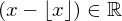
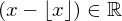
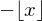
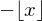
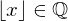
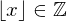

Show the Proof¶
In [1]:
import proveit
# Automation is not needed when only showing a stored proof:
proveit.defaults.automation = False # This will speed things up.
proveit.defaults.inline_pngs = False # Makes files smaller.
%show_proof
Out[1]:
| step type | requirements | statement | ||
|---|---|---|---|---|
| 0 | instantiation | 1, 2, 3 |  ⊢  ⊢  | |
 : :  , ,  :  :  | ||||
| 1 | theorem | ⊢  | ||
| proveit.numbers.addition.add_real_closure_bin | ||||
| 2 | reference | 12 | ⊢ | |
| 3 | instantiation | 4, 5 | ⊢ | |
:  | ||||
| 4 | theorem | ⊢  | ||
| proveit.numbers.negation.real_closure | ||||
| 5 | instantiation | 8, 6, 7 | ⊢  | |
 : :  , ,  : :  , : , : | ||||
| 6 | theorem | ⊢  | ||
| proveit.numbers.number_sets.real_numbers.rational_within_real | ||||
| 7 | instantiation | 8, 9, 10 | ⊢  | |
:  , : , : , : , : | ||||
| 8 | theorem | ⊢  | ||
| proveit.logic.sets.inclusion.superset_membership_from_proper_subset | ||||
| 9 | theorem | ⊢  | ||
| proveit.numbers.number_sets.rational_numbers.int_within_rational | ||||
| 10 | instantiation | 11, 12 | ⊢  | |
| : | ||||
| 11 | axiom | ⊢  | ||
| proveit.numbers.rounding.floor_is_an_int | ||||
| 12 | assumption | ⊢ | ||